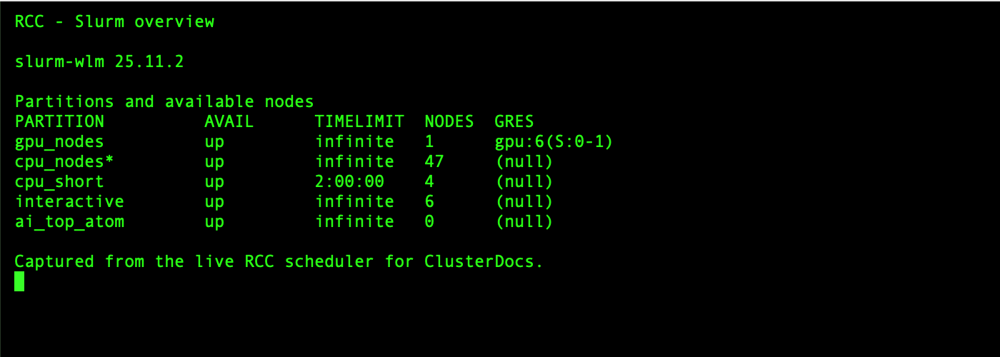

Course · RCC ClusterDocs
Class 5: Slurm acceptance patterns
Recommended starting point · 3 min video
Watch the class first
Slurm execution modes, everyday commands, bounded acceptance patterns, GPU selection, and safe scheduler use. Watch the complete lesson, then use the written page below for copyable commands, exercises, and reference details.
The videos are waiting for publication on the RCC documentation website. This preview deliberately does not link to a local copy or another host. The complete written lesson is available below.
This class adapts the same three patterns used by RCC software acceptance testing, but scales them down for one learner and one tiny job at a time.
Three execution modes
| Mode | Use it for | Do not use it for |
|---|---|---|
Short queue (cpu_short) |
Tests and batch jobs that finish within two hours | Long runners or work that needs a longer limit |
Interactive (interactive) |
Attended shells, debugging, notebooks, and Shiny development | Overnight, detached, or unattended computation |
Regular compute (cpu_nodes) |
Bounded long-running CPU batch jobs | Interactive sessions kept open while nobody is working |
GPU work follows the same principle: request the current GPU partition in a batch job and keep interactive GPU exploration attended and bounded.
By the end of Class 5, you should also be able to distinguish a GPU partition, an exact GPU type, an architecture feature, host memory, and GPU memory. The GPU-selection lesson is included below rather than presented as a separate class.
Everyday Slurm commands
| Task | Command |
|---|---|
| See partition summaries | sinfo |
| See your jobs | squeue --me |
| Open a bounded worker shell | srun --partition=interactive --pty --cpus-per-task=1 --mem=1G --time=00:15:00 bash -i |
| Submit a script | sbatch job.sbatch |
| Inspect a job | scontrol show job <jobid> |
| Measure a completed job | sacct -j <jobid> --format=JobID,State,Elapsed,MaxRSS,ExitCode |
| Stop a job | scancel <jobid> |
The following screenshot was captured from the RCC scheduler on 25 July 2026.
It shows what sinfo looks like, but the available nodes and partitions can
change. Run sinfo yourself before choosing a partition.

A minimal batch script is:
#!/usr/bin/env bash
#SBATCH --job-name=small-test
#SBATCH --partition=cpu_short
#SBATCH --cpus-per-task=1
#SBATCH --mem=1G
#SBATCH --time=00:10:00
set -euo pipefail
srun python analysis.py
Slurm normally allocates the requested CPU, memory, GPU, and time on a suitable
node. It does not give the job an exclusive whole node. Ordinary jobs should
not add --nodes or --exclusive; request whole or multiple nodes only for a
measured application designed to use them.
Choosing the right GPU on RCC
The default rule: Use the standard
gpu_nodespartition and request one GPU without a model unless your software, memory requirement, or reproducibility plan genuinely requires a particular GPU.
RCC does not create one queue for every GPU generation. Ampere, Blackwell, and
future standard GPU systems can share gpu_nodes when their scheduling policy
is the same. Slurm selects an exact model through a typed GPU request and an
architecture through a node constraint.
GPU learning objectives
After this part of Class 5, you can:
- distinguish a partition, GPU type, architecture feature, and system memory;
- discover the user-visible GPU labels without enumerating physical nodes;
- request any available GPU for the shortest practical queue time;
- request an exact GPU type when compatibility or reproducibility requires it;
- select an architecture without inventing a new partition name;
- request GPUs from Snakemake; and
- verify the GPU assigned to a running job.
Four different concepts
| Concept | RCC/Slurm example | What it controls |
|---|---|---|
| partition | gpu_nodes |
queue policy, limits, access, and priority |
| typed GPU GRES | rtx_a6000 |
exact consumable GPU model |
| architecture feature | gpu_arch_ampere |
Boolean hardware capability |
| system memory | --mem=32G |
host RAM, not GPU VRAM |
Do not create a mental model in which “partition” means “GPU model.” Partitions exist for policy. Types and features describe hardware.
See the available labels
This command prints unique GPU resource/feature combinations without showing physical node names:
sinfo -h -N -p gpu_nodes -o '%G|%f' | sort -u
You may see labels such as:
gpu:rtx_a6000:1|gpu,gpu_arch_ampere,gpu_model_rtx_a6000
The exact list can change as hardware is accepted. Copy the type exactly as published by Slurm and ClusterDocs; do not guess a marketing abbreviation.
RCC currently also has an ai_top_atom platform queue with typed GPU gb10
and feature gpu_arch_blackwell. That queue exists because the ARM64
Grace-Blackwell platform uses a different exclusive-user policy. It is a
policy exception, not the pattern for future Blackwell GPU servers.
Request any standard GPU
Use this when the application supports all GPUs currently offered in
gpu_nodes:
#!/usr/bin/env bash
#SBATCH --job-name=gpu-any
#SBATCH --partition=gpu_nodes
#SBATCH --gpus-per-node=1
#SBATCH --cpus-per-task=4
#SBATCH --mem=16G
#SBATCH --time=00:10:00
#SBATCH --output=logs/%x-%j.out
set -Eeuo pipefail
nvidia-smi -L
python your_gpu_program.py
The bounded copyable version is
gpu-any.sbatch. Submit it with:
mkdir -p logs
sbatch gpu-any.sbatch
This request gives Slurm the largest set of eligible systems and normally reduces waiting time.
Request an exact model
Use an exact model when at least one of these is true:
- the working set requires the VRAM available on that model;
- the application or container has been validated only on that model;
- a benchmark must be comparable with earlier runs;
- a numerical or performance result is explicitly hardware-dependent; or
- the application uses model-specific capabilities.
Example for the current standard x86 GPU type:
#SBATCH --partition=gpu_nodes
#SBATCH --gpus-per-node=rtx_a6000:1
The bounded copyable version is
gpu-rtx-a6000.sbatch. The
equivalent command-line form is:
sbatch --partition=gpu_nodes --gpus-per-node=rtx_a6000:1 gpu-work.sbatch
Do not request rtx_a6000 merely because it is familiar. An untyped request is
more portable and gives the scheduler more choices.
Request an architecture
Use a constraint when the requirement applies to an architecture family rather than one exact model:
#SBATCH --partition=gpu_nodes
#SBATCH --gpus-per-node=1
#SBATCH --constraint=gpu_arch_ampere
A future standard Blackwell server with the normal RCC GPU policy would use:
#SBATCH --partition=gpu_nodes
#SBATCH --gpus-per-node=1
#SBATCH --constraint=gpu_arch_blackwell
The second example becomes runnable only when such a node is listed in
gpu_nodes. Do not substitute the special ai_top_atom queue unless your work
is approved and compatible with that ARM64 platform.
For a soft preference rather than a requirement, advanced users may use:
sbatch --partition=gpu_nodes --gpus-per-node=1 \
--prefer=gpu_arch_blackwell gpu-work.sbatch
A preference permits fallback; a constraint does not.
GPU VRAM versus --mem
--mem=32G requests system RAM. It does not reserve 32 GB of GPU memory.
GPU VRAM is a property of the selected GPU type. Select a type only when the
application's measured peak GPU-memory use requires it.
Inside the job:
nvidia-smi --query-gpu=name,memory.total,memory.used,driver_version \
--format=csv
Measure representative data before launching a large workflow. Out-of-memory failures should lead to a reviewed resource change, not an automatic retry storm.
Apptainer GPU jobs
Slurm allocates the GPU. Apptainer exposes the host NVIDIA driver and devices:
apptainer exec --nv --cleanenv /approved/images/tool.sif \
python /work/run_analysis.py
The container must not install or replace the host NVIDIA driver. Record the image digest, GPU type, driver version, and important application versions with the analysis when hardware-dependent reproducibility matters.
Snakemake GPU resources
For any standard GPU:
rule gpu_analysis:
input:
"data/input.tsv"
output:
"results/output.tsv"
threads: 4
resources:
slurm_partition="gpu_nodes",
gpu=1,
mem_mb=16000,
runtime=30
shell:
"python workflow/scripts/gpu_analysis.py {input} {output}"
For an exact model:
resources:
slurm_partition="gpu_nodes",
gpu=1,
gpu_model="rtx_a6000",
mem_mb=16000,
runtime=30
For an architecture requirement:
resources:
slurm_partition="gpu_nodes",
gpu=1,
constraint="gpu_arch_ampere",
mem_mb=16000,
runtime=30
Keep RCC-specific labels in a workflow profile or configuration layer when the workflow should also run on other clusters.
Verify the allocation
Inside the job, capture:
printf 'job=%s node=%s\n' "$SLURM_JOB_ID" "$SLURMD_NODENAME"
printf 'allocated_gpu_ids=%s\n' "${SLURM_JOB_GPUS:-unknown}"
nvidia-smi -L
nvidia-smi --query-gpu=name,uuid,memory.total,driver_version --format=csv
After completion:
sacct -j JOB_ID \
--format=JobID,State,Elapsed,AllocTRES,ReqTRES,MaxRSS,ExitCode
Retain this information for performance studies and hardware-sensitive analyses.
Why a GPU job is pending
Use the reason Slurm gives you:
squeue -j JOB_ID -o '%.18i %.9T %.40R'
Common interpretations:
| Reason | Meaning |
|---|---|
Resources |
matching GPUs are busy |
Priority |
other eligible jobs currently rank ahead |
QOS... or Assoc... |
an account/QOS limit applies |
ReqNodeNotAvail |
required hardware is unavailable or drained |
A typed model or architecture constraint deliberately reduces the eligible pool. Remove it only when the application can genuinely run on other GPUs.
GPU decision checklist
Use any GPU when:
- the application supports all published standard GPU types;
- the dataset fits on all standard GPUs; and
- exact hardware is not part of the scientific comparison.
Use an exact type when:
- measured VRAM requirements demand it;
- validated software compatibility is model-specific; or
- reproducibility requires the same model.
Use an architecture constraint when:
- compiled kernels or capabilities require the architecture family; and
- more than one model in that architecture would be acceptable.
Use a special partition only when RCC documents a policy/platform reason.
Never invent gpu_ampere, gpu_blackwell, or a model-specific queue name.
GPU completion exercise
- Run
sinfo -h -N -p gpu_nodes -o '%G|%f' | sort -u. - Submit the bounded “any GPU” example.
- Record the assigned model and total VRAM.
- Submit the typed example only if
rtx_a6000remains published. - Explain which request gives Slurm more placement choices and why.
Pattern 1: Bash hello
The first job verifies scheduling, environment capture, output handling and exact comparison.
bash exercises/slurm/run-gate.sh bash
Pattern 2: Snakemake inside an allocation
The second job runs a minimal local Snakemake workflow. It does not download packages or contact external services.
bash exercises/slurm/run-gate.sh snakemake
Pattern 3: Apptainer inside an allocation
The third job uses an instructor-provided, immutable training image:
export RCC_TRAINING_IMAGE=/approved/path/to/training-image.sif
bash exercises/slurm/run-gate.sh apptainer
Built-in availability protection
The gate:
- submits only one job at a time;
- uses one CPU, 128 MiB RAM and a two-minute limit;
- refuses job arrays;
- refuses to run when another learner gate is active for the same user;
- waits for a bounded period;
- compares output byte-for-byte;
- cleans only its own temporary directory;
- does not enumerate nodes or expose scheduler configuration.
What the examples prove
A passing class gate shows that your account can execute the pattern. It is not a cluster-wide health test and must not be expanded into host-by-host probing.
Reference companion: After completing the bounded gates, use the Slurm command reference for dependencies, reusable allocations, GPU requests, accounting, cancellation, and checkpointing.
Knowledge check
Why compare output byte-for-byte?
It detects small, unexpected changes and makes the gate deterministic.
Why not run all examples in parallel?
Parallelism is unnecessary for a learner gate and creates avoidable load and harder-to-understand failures.